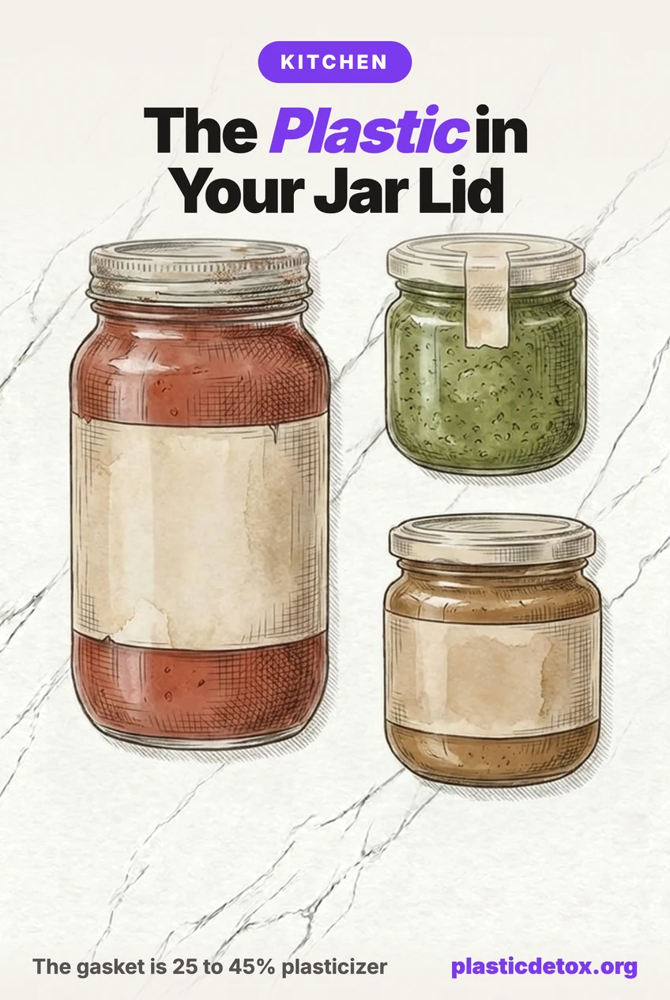

The Plastic Inside Your Glass Jar Lid: What the Gasket Really Is (2026)

We tell people to switch from plastic to glass constantly, and our glass food storage guide is one of the most read things we publish. A reader wrote in to point out the obvious hole in that advice: the glass jar is not entirely glass. Turn a lid over and there is a soft white or beige ring pressed into it. That ring is plastic, it is loaded with plasticizer, and for a specific set of foods the research shows it does not stay in the lid.
The 30 Second Summary
- That ring is PVC plastisol, the compressible seal that lets metal grip glass. It is 25 to 45 percent plasticizer by weight, most often epoxidized soybean oil or a phthalate.
- The numbers are not small. European enforcement testing measured up to 1,170 mg/kg of plasticizer in food sold in glass jars, against a 60 mg/kg legal limit.
- It is a fat problem, not a glass problem. Every failing sample had at least around 4 percent free oil or fat touching the lid. Dry and watery foods barely transfer anything, because plasticizers dissolve into fat, not water.
- The worst combination is fat plus heat in the jar: pesto, oil packed vegetables and antipasti, oily sauces, fish in oil. Nut butter, honey and tahini are cold filled, so they sit in a far better position.
- The fix is a dollar or two a lid. A one piece 316 stainless steel jar lid has no plastisol and no epoxy in the food path, and it fits the jars you already own.
- Keep reusing grocery jars. Store them upright, use the original lid for dry goods, and swap to stainless for anything oily or anything you keep for months.
- Wide mouth jars (86mm): EcoPeaceful 316 Stainless, Wide Mouth
- Standard mouth jars (70mm): EcoPeaceful 316 Stainless, Regular Mouth
1. What That Ring Actually Is
Most people assume it is the same lining as the inside of an aluminum can. It is not. A can lining is a thin sprayed on epoxy or polyester coating. A jar lid gasket is a completely different material doing a completely different job.
Metal cannot seal against glass on its own. Glass rims are hard and slightly irregular, so a twist off lid needs something soft to squash against. That something is plastisol, a PVC paste that is poured into the lid, spun into a ring, and baked until it sets into a rubbery seal. To make rigid PVC soft enough to do that job, manufacturers load it with plasticizer, and plasticizer is not chemically bonded to the plastic. It sits between the polymer chains, which is exactly why it can leave.
So what is in the plasticizer? A Swiss market survey of gaskets pulled from retail jars broke it down:
- About 64 percent used epoxidized soybean oil (ESBO) as the main plasticizer. It sounds like food, and it is derived from soybean oil, but it is a chemically modified industrial additive with its own migration limit.
- About 22 percent used a phthalate, most often DEHP, DINP or DIDP. These are the endocrine disrupting plasticizers we cover in how to avoid BPA and phthalates.
- About 6 percent used substantial amounts of DEHA, an adipate plasticizer.
Plasticizers are not bonded into the plastic. They are physically mixed in, which is what makes the material flexible and also what lets them migrate out. This is the same reason soft PVC is a problem everywhere it shows up, from shower curtains to yoga mats.
2. What the Testing Found
This is not a theoretical concern that someone extrapolated from a lab simulant. European authorities ran enforcement campaigns on products pulled off actual shelves and measured what was in the food itself.
The headline number, 1,170 mg/kg of ESBO, is roughly twenty times the legal limit, found in food people bought and ate. A second European enforcement campaign concluded that compliance work across the industry was poor.
3. The Three Variables That Decide Everything
Read enough of this research and the same three factors show up in every failing sample. Once you know them, you can assess any jar in your kitchen without looking anything up.
A few points worth spelling out, because they change what you do.
- It is a contact effect, not a whole jar effect. The plasticizer concentrates in whatever is touching the gasket, which is why storing a jar on its side or upside down is a genuinely bad idea for anything oily. Upright, the contact area is a coin.
- A lot of the damage is done before you buy it. Since migration accelerates with heat, a product pasteurized inside its jar arrives carrying a load that no storage habit of yours can undo.
- Migration does not reverse. Transferring food to a better container stops the clock. It does not subtract what already moved.
- Direct contact is the main route, but not the only one. Phthalates are semi volatile, so over long storage they can travel through the air in the headspace and settle on dry food without touching the gasket. This has been measured in dry goods packed in paperboard at low single digit mg/kg. It is a much smaller effect, and ESBO is too large a molecule to do it at all, but it is the reason we would not store flour under a reused grocery lid for a year.
4. Which Jarred Foods Actually Matter
Sort every jar in your pantry into three groups. Almost everything falls out cleanly.
| Category | Examples | Why | Verdict |
|---|---|---|---|
| Fat plus heat in the jar | Pesto, artichokes and peppers in oil, antipasti, oily pasta sauces, fish packed in oil | High free fat, pasteurized inside the jar, long shelf life. All three variables at once. | The real problem |
| Fat, cold filled | Nut butters, tahini, honey, ghee, coconut oil, olive oil | Fatty, but never heat processed in the jar, so the factory pulse is missing. | Fine, with habits |
| Wet and low fat | Pickles, sauerkraut, olives in brine, capers, jam, tomato passata | Plasticizers are fat soluble. Brine and sugar syrup pull very little out. | Low concern |
| Dry goods | Rice, beans, lentils, spices, tea, flour, pasta | No fat and no liquid contact. Only the slow vapor route applies, and only over long storage. | Non issue |
5. How to Tell If a Jar Was Heat Processed
No label says hot filled or pasteurized in the jar. But the food gives it away, because food safety law does the work for you.
The pop up button is a useful but imperfect signal. It confirms a vacuum, and a vacuum most often comes from hot filling and cooling. Some cold filled products are vacuum sealed mechanically, so read it alongside the food type rather than on its own.
When it genuinely matters to you, ask the brand. Small producers answer email. One message covers it: is this hot filled or pasteurized in the jar, and is your lid gasket PVC free? The second question is the more valuable of the two, because a PVC free gasket makes the temperature question irrelevant.
6. The Fix: Lids Worth Buying
This is a rare case where the solution is permanent, one time, and fits equipment you already own. Multipacks work out to roughly a dollar or two per lid. A one piece stainless steel storage lid screws onto standard regular and wide mouth jars, has no plastisol, and has no epoxy coating in the food path. The seal is food grade silicone, which is inert and does not rely on a plasticizer to stay soft, which is the whole difference.
We checked both for recalls, lawsuits and independent test results and found nothing against them. Two picks cover it, because the only real decision is whether your jars are regular or wide mouth. Note that these are storage lids, not canning lids. They are not designed to hold a canning seal, so keep using proper canning lids if you are preserving.

EcoPeaceful 316 Stainless Steel Lids, Wide Mouth
316 surgical grade stainless steel with a removable food grade silicone seal, stated PVC free and BPA free. Airtight and leak proof, so it holds liquids and oils. Stackable with a pull tab for removing the gasket to wash. Storage lid, not rated for canning.
View →
EcoPeaceful 316 Stainless Steel Lids, Regular Mouth
The 70mm regular mouth version of the same lid, which is the size most reused grocery jars take. 316 stainless with a silicone seal, PVC free and BPA free, airtight and leak proof. Storage lid, not rated for canning.
View →For the full comparison of glass, stainless and silicone across every kind of container, see our guide to the best plastic free food storage containers.
Measure before you order. Reused grocery jars are usually 70mm (regular mouth) or 86mm (wide mouth) across the threads, but European jars sometimes use 82mm and will not take either. A ruler across the opening settles it in ten seconds.
7. Reusing Grocery Jars, Done Right
None of this is an argument against saving jars. Reusing them is still one of the best free swaps in the kitchen, and it is on our list of free ways to reduce plastic exposure. It just needs one rule added.
One more thing worth saying plainly, because the alternative to a glass jar is usually a plastic tub. If your only choice for almond butter is glass with a plastisol gasket or a plastic container, take the glass every time. The gasket is a coin sized area touching the top surface. The tub is the entire container against a high fat food for the whole shelf life, plus abrasion every time a knife goes in. The right comparison is never against perfect, it is against what else is on the shelf.
The general principle when no clean option exists: pick the container with the least contact area and the shortest contact time, then control the variables you can. That is the same logic we apply in what actually matters in the grocery store.
8. Frequently Asked Questions
What is the white plastic ring inside a jar lid?
It is a PVC plastisol gasket, the compressible seal that lets a metal lid grip glass and hold a vacuum. Plastisol is 25 to 45 percent plasticizer by weight. A Swiss market survey of lid gaskets found about 64 percent used epoxidized soybean oil as the main plasticizer, 22 percent used a phthalate such as DEHP, DINP or DIDP, and about 6 percent used DEHA. It is a different material from the epoxy coating that lines aluminum cans.
Do chemicals from jar lids get into food?
Into some foods, yes. European enforcement campaigns measured up to 1,170 mg/kg epoxidized soybean oil, 825 mg/kg DEHP, 740 mg/kg DIDP and 270 mg/kg DINP in foods sold in glass jars, against a legal limit of 60 mg/kg for ESBO. The samples that failed shared one feature: at least around 4 percent free oil or fat, and a consistency that let the food reach the lid. Dry and watery low fat foods showed very little transfer, because plasticizers dissolve into fat rather than water.
Which jarred foods are the worst for lid gasket migration?
High fat foods that were heat processed inside the jar. That means pesto, vegetables and antipasti packed in oil, marinated artichokes and peppers, oily sauces, and fish packed in oil. Nut butters, tahini, honey and ghee are fatty but are cold filled rather than pasteurized in the jar, so they sit in a much better position. Dry goods and watery low fat foods are close to a non issue.
Is it safe to reuse grocery store jars?
Yes for dry and low fat foods stored upright, which covers rice, beans, lentils, spices, tea and most pantry staples. For anything oily, for ferments, and for anything you keep for months, put a one piece stainless steel lid on the jar instead of the original. Stainless lids work out to roughly a dollar or two each in a multipack and fit standard regular and wide mouth jars, and they remove the gasket from the equation entirely.
How can I tell if a jarred food was hot filled or pasteurized?
There is no label for it, so use the food itself. Anything wet and low acid that is shelf stable for a year legally had to be heat treated inside the jar, which is why it says refrigerate after opening. Anything high fat and low moisture, such as nut butter, honey, tahini or oil, does not need a heat step because it is not a medium bacteria can grow in. Keep refrigerated on a sealed unopened jar is a strong sign the producer skipped the kill step.
Do mason jar lids have BPA?
Standard two piece canning lids have a sealing compound on the underside and a coating over the metal, and BPA epoxy has historically been used in that coating. The exposed area is far smaller than a can and the sealant usually sits between the coating and the food. If you want to remove the question, a one piece 316 stainless steel storage lid with a silicone seal has no plastisol and no epoxy in the food path.
Is silicone a better seal than plastisol?
Yes, for this purpose. Plastisol is rigid PVC made soft by loading it with plasticizer that is not chemically bonded and therefore able to migrate into fat. Food grade silicone is flexible without any added plasticizer, so there is no equivalent additive to leach. Silicone is not literally inert at high heat over long periods, but for a jar seal at room or fridge temperature it is a substantially better material.
Related Articles
- Best Plastic Free Food Storage Containers
The full guide to glass, stainless, and what to put your food in. - Plastic in Groceries: What Really Matters
Where to spend your effort in the grocery store, ranked. - How to Avoid BPA and Phthalates
The two additive families behind most food packaging concerns. - BPA Free Does Not Mean Safe
Why the replacement chemicals deserve the same scrutiny.